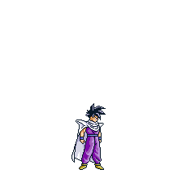
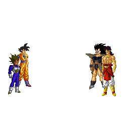

Cada jugador elige las X o las O, y en su turno debe poner una, intentando conseguir 3 seguidas en una línea vertical, horizontal o diagonal. Una vez se llenan todos los espacios se termina la partida, finalizando en tablas si ninguno consigue enlazar tres de sus fichas seguidas.
 | FICHAS | |
|---|---|
| PLAYER A | PLAYER B |
| Ficha 1 | Ficha 1 |
| Ficha 2 | Ficha 2 |
| Ficha 3 | Ficha 3 |
Nombre de empresa
Calle, 123, C.P. Localidad, Provincia
123 45 67 89
www.example.com
La historia del tres en raya tal y como conocemos se remonta a la lejana Persia, hace casi mil años, desde donde mercaderes italianos lo exportaron a sus tierras y lo extendieron. En poco tiempo se convirtió en uno de los juegos más populares de las clases bajas en la Edad Media. En España se conservan numerosas pruebas de lo extendido que estaba este juego. El juego que todos conocemos es muy fácil de recrear y eso fue vital a la hora de su pronta expansión. Tuvo un periodo negro, entre los siglos X y XI debido a su asociación con rituales paganos y su descalificación por parte de las clases altas de la sociedad. Tal fue su importancia y fama que el Papa Bonifacio VI creó una bula papal que prohibía su práctica para todos los cristianos, arrinconando así el juego como un elemento de la magia negra o pagana.